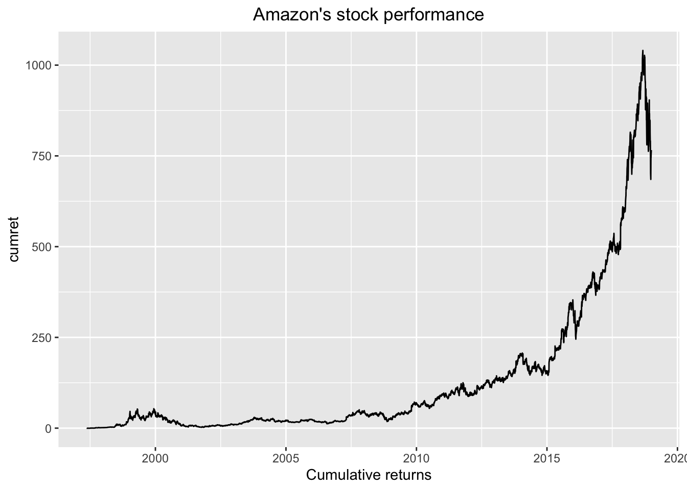

Chapter 3 The backbone: The relational database
The approach I take in this chapter is to start by illustrating the kinds of things that a relational database platform allows me to do. Initially, I will gloss over the messy details of setting up a database, getting data into it, etc. But rest assured that if you like what you see, it is fairly straightforward to set up the infrastructure I describe.8
In addition, I will often illustrate ideas using code that I only fully explain later in the book. For example, I find R packages such as dplyr to be particularly slick
3.1 Handling large-ish data sets
One nice feature of a relational database is that it makes it easy to access data from large-ish data sets.
Suppose I was interested in the stock returns of Amazon.9
The CRSP daily stock file (denoted as crsp.dsf on the WRDS system) contains about 18 GB of data in about 90 million rows. While someone dealing with the log files of a busy website or managing the geospatial data of Uber would chuckle at the idea of this being “big data”, the reality is that 18GB is a pain to work with in a number of situations:
- When the data aren’t local. Downloading 18GB over the internet is time-consuming with even the fastest broadband connections.
- When you have limited RAM. For a typical laptop in 2017, loading in 18GB into memory will exhaust available RAM.
- When you’re only interested in a small sliver of the data, such in our hypothetical “Amazon stock returns” case.
So how would I access these data? First, I would establish a connection to my database:
library(dplyr, warn.conflicts = FALSE)
pg <- src_postgres()Here I am using R (and, in particular, the package dplyr). The first line loads the package.10 The second line connects to my database.11
The next thing I need to do is to identify the permno (CRSP’s firm identifier), which I can get by looking at the crsp.stocknames table.
stocknames <- tbl(pg, sql("SELECT * FROM crsp.stocknames"))
stocknames %>%
filter(comnam %~*% 'AMAZON') %>%
select(permno, comnam) %>%
collect()## # A tibble: 1 × 2
## permno comnam
## * <int> <chr>
## 1 84788 AMAZON COM INCThe first line of the code creates a variable stocknames that I can use to refer to the underlying data table crsp.stocknames in my database.12
Here I am using the %>% “pipe” operator, which is comes from the magrittr package and is re-exported by dplyr. The easiest way to understand this in the context of dplyr is that thing to the left of %>% is typically the object of the thing to the right of %>%, which is typically a verb. So we take stocknames, and filter to retain only observations where the company name (comnam) matches AMAZON.13 Now that I know that the PERMNO for Amazon is 84788, I can go to the daily stock file (crsp.dsf) to get stock returns.14
The result from that filter operation is another (smaller) data set that becomes the object for the next verb: select. Like its SQL counterpart (typically written SELECT in SQL circles), select chooses the columns of the data set that are to be retained. For this query, we want the permno and, to check we have the right company, the company’s name (comnam).
dsf <- tbl(pg, sql("SELECT * FROM crsp.dsf"))
amzn_rets <-
dsf %>%
filter(permno == 84788L) %>%
select(permno, date, ret, prc) %>%
mutate(prc = abs(prc)) %>%
collect()
amzn_rets## # A tibble: 4,941 × 4
## permno date ret prc
## * <int> <date> <dbl> <dbl>
## 1 84788 1997-05-15 NA 23.5000
## 2 84788 1997-05-16 -0.117021 20.7500
## 3 84788 1997-05-19 -0.012048 20.5000
## 4 84788 1997-05-20 -0.042683 19.6250
## 5 84788 1997-05-21 -0.127389 17.1250
## 6 84788 1997-05-22 -0.021898 16.7500
## 7 84788 1997-05-23 0.074627 18.0000
## 8 84788 1997-05-27 0.055556 19.0000
## 9 84788 1997-05-28 -0.032895 18.3750
## 10 84788 1997-05-29 -0.017007 18.0625
## # ... with 4,931 more rowsNow, we set up a variable to refer to crsp.dsf, filter to get data just for Amazon, select the variables of interest, then mutate the stock price variable (prc) to correct negative values, before using collect to bring the data from the database into R.15
Note that this all took about a tenth of a second. So the fact that the data are stored in an 18GB table on a different computer was not at all problematic. PostgreSQL is able to grab the data of interest quickly and send (over the internet) just what I need. The resulting data is a mere 136.4 Kb.
Now that I have the data, suppose that I wanted to plot cumulative stock performance. Many researchers would take the data above and dump to a file that could be opened in Excel, open that file in Excel, use the mouse to select the data of interest, and then make a plot. That plot could be copied and pasted into, say, a Word document. But here we have taken several manual steps of the kind I argued against in Chapter 2.
How else might we do this? Well, we could use the excellent ggplot2 package to make a plot following on from our steps so far. Here is the code to do so:
library(ggplot2)
amzn_rets %>%
mutate(cumret = cumprod(1+coalesce(ret, 0)) - 1) %>%
ggplot(aes(x = date, y = cumret)) +
geom_line() +
xlab("Cumulative returns") +
ggtitle("Amazon's stock performance") +
theme(plot.title = element_text(hjust = 0.5))
Much of the code I use to maintain my platform, along with instructions for using it, is available on my GitHub page.↩
This is admittedly not a particularly realistic research problem, but many of the benefits described here do accrue in real research applications.↩
You may have to
install.packages("dplyr")if you do not have it installed already.↩I have omitted connection information here. As I will discuss later, I think it is good practice to supply that elsewhere, which is what I have done here.↩
This syntax requires the use of a full SQL statement,
SELECT * FROM crsp.stocknames, which isn’t particularly elegant, but also isn’t particularly problematic.↩%~%is PostgreSQL’s regular expression matching operator. More will be said on all this later on. For now, just accept that it’s doing some kind of string matching.↩An alternative approach would involve joining the query above with the one below. But I assume that it is necessary to visually inspect the query above to verify that we have the right “Amazon” here.↩
Stock prices should be positive, but André de Souza of NYU points out that “closing prices in the
crsp.msfandcrsp.dsffiles are negative if the price is not the price from an actual trade, but the average of bid-ask spreads. I always setprc = abs(prc)before I do anything else with price.”↩